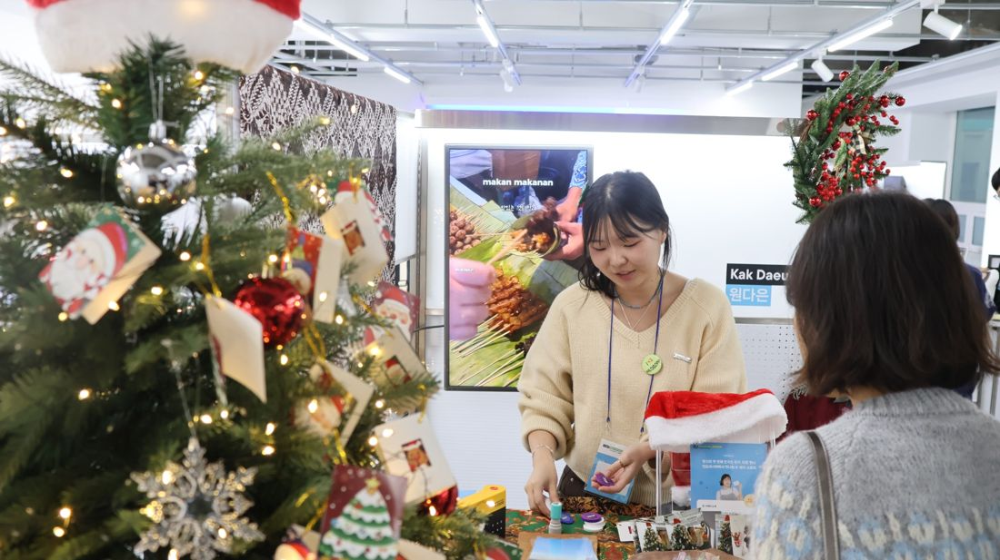
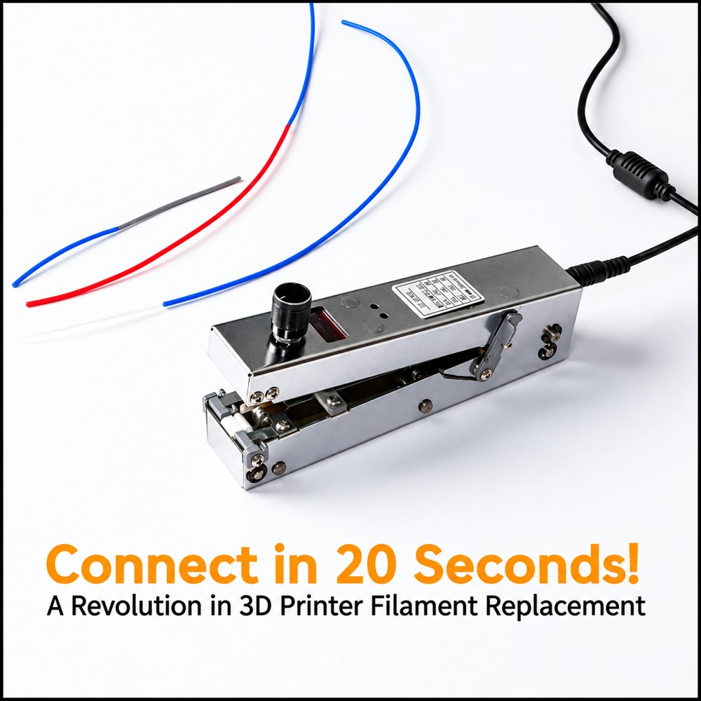

부산외국어대학교
주전공 인도네시아-말레이시아학과
복수전공 국제마케팅학과
MARKETING PORTFOLIO / WON DAEUN
마케터 원다은 Won Daeun
일상에서 발견한 가능성을 구체적인 실행으로 옮기고,
사람들의 반응을 살피며 더 나은 결과를 만듭니다.
24 HOURS OF IDEAS & ACTION

01 / ABOUT ME
인도네시아 현지 경험부터 프로젝트 운영까지,
관찰한 것을 실행하고 결과로 연결해 온 여정입니다.
사람들의 반응과 시장의 흐름을 살피며
새로운 기회를 발견합니다.
타깃과 목적에 맞는 방법을 고민하고
실행할 수 있는 계획으로 구체화합니다.
계획을 직접 실행하고, 어려움 속에서도
책임감을 갖고 결과까지 이어갑니다.
02 / SELECTED WORK
데이터 기반 기획부터 소비자 참여, 그리고 실행까지.

참여자 만족도 4.7점 / 5점 · 후속 영상 좋아요 약 2,400개
프로 과정 참여자 400명 중 마스터 과정 최종 19인에 선발되어 개인 부스 전시 참여
오프라인에서 수집한 소비자 의견을 실제 제품 사용 콘텐츠로 연결한 경험
금상 수상, 유학 경험을 하나의 이야기로 구성한 영상 기획
주한 인도네시아 대사관 주관 영상 공모전 금상 수상
경험을 하나의 흐름으로 연결하는 스토리텔링이 영상의 메시지와 공감을 강화한다는 점 체득

잠재 바이어 리드 3건 · 협력기업 담당자 연결 1건
제한된 예산에서 타깃을 선정하고, 프로젝트 중단 위기에 대응하며 실제 바이어 접점까지 확보한 경험
카드뉴스 6건 제작 · ‘우리부산 ESG 지도’ 이달의 콘텐츠 선정
대상자의 눈높이에 맞춘 정보 전달과 현장의 어려움에 대응하는 실행이 실제 참여를 이끄는 데 중요하다는 점 체득
조회수 약 3.7만 회 · 좋아요 약 2,000개 · 댓글 61개
타깃의 관심사와 연결되는 키워드, 콘텐츠 형식에 맞는 전개 방식의 중요성 확인
03 / EXPERIENCE
주전공 인도네시아-말레이시아학과
복수전공 국제마케팅학과
Surabaya, Indonesia
Darmasiswa 인도네시아 정부초청 장학생
Bali, Indonesia · BIPA 과정 수료
무역부 인턴
인도네시아 특정 상품의 시장 진출 가능성 조사,
잠재 바이어 발굴과 상품 홍보 자료 제작 지원 및 결과 보고서 작성
한국커리어개발원 · 자격 취득
대한무역투자진흥공사 · 자격 취득
전시 부스 방문객 수 부문 3위
금상 수상
특별상 수상
3등상 수상
루키, 프로, 마스터 과정 수료
서포터즈
청년 교육생
04 / LET’S CONNECT
새로운 가능성을 함께 발견하고 실행하겠습니다.
마케터 원다은에게 연락해 주세요.